Aligning single-cell resolution spatial transcriptomics data to H&E staining image from Visium
In this notebook, we take a single cell resolution spatial transcriptomics datasets of a coronal section of the adult mouse brain profiled by the MERFISH technology and align it to a H&E staining image from a different individual at matched locations with respect to bregma.
We will use STalign to achieve this alignment. We will first load the relevant code libraries.
[1]:
## import dependencies
import numpy as np
import matplotlib.pyplot as plt
import matplotlib.transforms as mtransforms
import pandas as pd
import torch
import plotly
import requests
# import STalign
from STalign import STalign
# make plots bigger
plt.rcParams["figure.figsize"] = (12,10)
We can read in the single cell information using pandas as pd.
[2]:
# Single cell data 1
# read in data
fname = '../merfish_data/datasets_mouse_brain_map_BrainReceptorShowcase_Slice2_Replicate3_cell_metadata_S2R3.csv.gz'
df1 = pd.read_csv(fname)
print(df1.head())
Unnamed: 0 fov volume center_x \
0 158338042824236264719696604356349910479 33 532.778772 617.916619
1 260594727341160372355976405428092853003 33 1004.430016 596.808018
2 307643940700812339199503248604719950662 33 1267.183208 578.880018
3 30863303465976316429997331474071348973 33 1403.401822 572.616017
4 313162718584097621688679244357302162401 33 507.949497 608.364018
center_y min_x max_x min_y max_y
0 2666.520010 614.725219 621.108019 2657.545209 2675.494810
1 2763.450012 589.669218 603.946818 2757.013212 2769.886812
2 2748.978012 570.877217 586.882818 2740.489211 2757.466812
3 2766.690012 564.937217 580.294818 2756.581212 2776.798812
4 2687.418010 603.061218 613.666818 2682.493210 2692.342810
For alignment with STalign, we only need the cell centroid information. So we can pull out this information. We can further visualize the cell centroids to get a sense of the variation in cell density that we will be relying on for our alignment by plotting using matplotlib.pyplot as plt.
[3]:
# get cell centroid coordinates
xI = np.array(df1['center_x'])
yI = np.array(df1['center_y'])
# plot
fig,ax = plt.subplots()
ax.scatter(xI,yI,s=1,alpha=0.2)
#ax.set_aspect('equal', 'box')
[3]:
<matplotlib.collections.PathCollection at 0x11e830200>
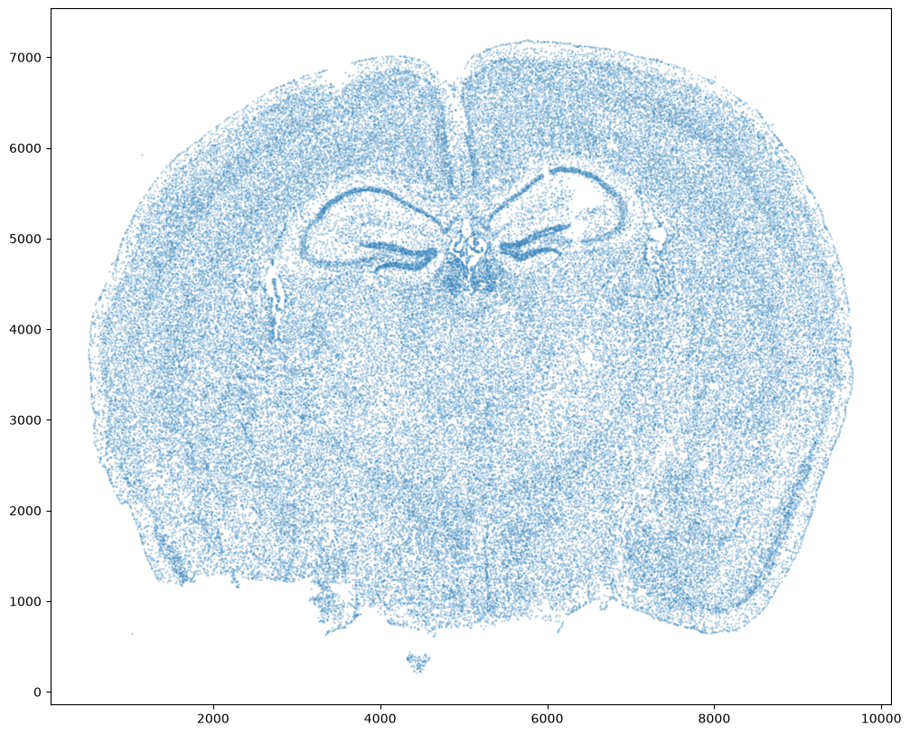
We will use STalign to rasterize the single cell centroid positions into an image. Assuming the single-cell centroid coordinates are in microns, we will perform this rasterization at a 30 micron resolution. We can visualize the resulting rasterized image.
Note that points are plotting with the origin at bottom left while images are typically plotted with origin at top left so we’ve used invert_yaxis() to invert the yaxis for visualization consistency.
[4]:
# rasterize at 30um resolution (assuming positions are in um units) and plot
XI,YI,I,fig = STalign.rasterize(xI, yI, dx=30)
ax = fig.axes[0]
ax.invert_yaxis()
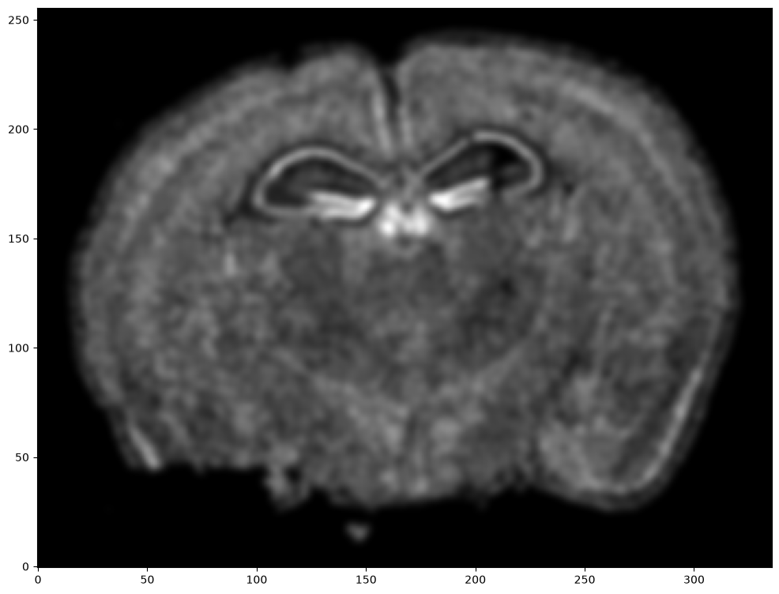
Note that this is a 1D greyscale image. To align with an RGB H&E image, we will need to make our greyscale image into RGB by simply stacking the 1D values 3 times. We will also normalize to get intensity values between 0 to 1.
[5]:
print("The initial shape of I is {}".format(I.shape))
I = np.vstack((I, I, I)) # make into 3xNxM
print("The range of I is {} to {}".format(I.min(), I.max() ))
# normalize
I = STalign.normalize(I)
print("The range of I after normalization is {} to {}".format(I.min(), I.max() ))
# double check size of things
print("The new shape of I is {}".format(I.shape))
The initial shape of I is (1, 256, 336)
The range of I is 0.0 to 4.71548518447721
The range of I after normalization is 0.0 to 1.0
The new shape of I is (3, 256, 336)
We have already downloaded the H&E staining image from https://www.10xgenomics.com/resources/datasets/adult-mouse-brain-ffpe-1-standard-1-3-0 and placed the file in a folder called visium_data
We can read in the H&E staining image using matplotlib.pyplot as plt.
[6]:
image_file = '../visium_data/tissue_hires_image.png'
V = plt.imread(image_file)
# plot
fig,ax = plt.subplots()
ax.imshow(V)
[6]:
<matplotlib.image.AxesImage at 0x12adcd370>
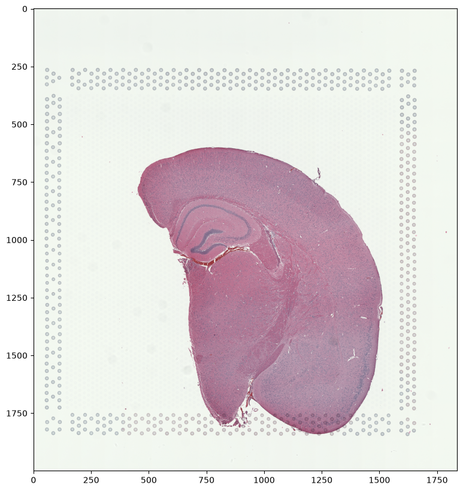
Note that this is an RGB image that matplotlib.pyplot had read in as an NxMx3 matrix with values ranging from 0 to 1. We will use STalign to normalize the image in case there are any outlier intensities.
[7]:
print("The initial shape of V is {}".format(V.shape))
print("The range of V is {} to {}".format(V.min(), V.max() ))
Vnorm = STalign.normalize(V)
print("The range of V after normalization is {} to {}".format(Vnorm.min(), Vnorm.max() ))
The initial shape of V is (2000, 1838, 3)
The range of V is 0.10588235408067703 to 1.0
The range of V after normalization is 0.0 to 1.0
We will transpose Vnorm to be a 3xNxM matrix J for downstream analyses. We will also create some variances YJ and XJ to keep track of the image size.
[8]:
J = Vnorm.transpose(2,0,1)
print("The new shape of J is {}".format(J.shape))
YJ = np.array(range(J.shape[1]))*1. # needs to be longs not doubles for STalign.transform later so multiply by 1.
XJ = np.array(range(J.shape[2]))*1. # needs to be longs not doubles for STalign.transform later so multiply by 1.
The new shape of J is (3, 2000, 1838)
We now have a rasterized image corresponding to the single cell positions from the spatial transcriptomics data and an H&E image that we can align. Note, that we have specified the image from cell positions as source I and the H&E image as target J because the H&E image is only one hemisphere of the brain. We advise choosing the more complete tissue section as the source such that every observation in the target has some correspondence in the source.
[9]:
# plot
extentI = STalign.extent_from_x((YI,XI))
fig,ax = plt.subplots(1,2)
ax[0].imshow((I.transpose(1,2,0).squeeze()), extent=extentI)
ax[0].invert_yaxis()
ax[0].set_title('source', fontsize=15)
ax[1].imshow((J).transpose(1,2,0))
ax[1].set_title('target', fontsize=15)
[9]:
Text(0.5, 1.0, 'target')
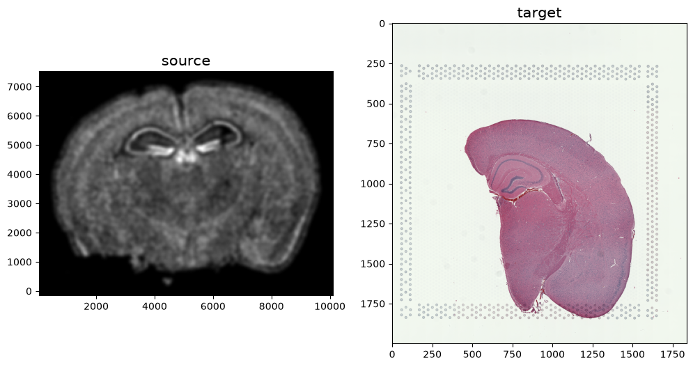
STalign relies on an interative gradient descent to align these two images. This can be somewhat slow. We manually created 3 points that visually mark similar landmarks across the two datasets that we will use to initialize a simple affine alignment from the landmark points.
We can double check that our landmark points look sensible by plotting them along with the rasterized image we created.
[10]:
# manually make corresponding points
data = np.load('../visium_data/visium2_points.npz')
pointsI = np.array(data['pointsI'][...,::-1])
pointsJ = np.array(data['pointsJ'][...,::-1])
print(pointsI)
print(pointsJ)
[[5499.7972588 5095.02260152]
[6628.02391148 4910.8223317 ]
[7019.44948485 5463.42314117]
[ 963.86561437 6937.02529977]
[4901.14638187 5532.49824236]
[4832.07128069 6131.14911929]
[5131.39671915 6223.2492542 ]
[5753.07262981 6154.17415302]
[5246.52188779 6937.02529977]
[5591.89739371 6683.74992876]
[5269.54692152 5371.32300626]
[ 641.51514218 8111.3020199 ]]
[[ 938.72950082 559.82404846]
[ 788.82693749 463.88640793]
[ 674.90098936 505.85912566]
[1694.23842003 955.56681566]
[1046.65934642 709.72661179]
[1022.67493629 823.65255993]
[ 956.71780842 799.66814979]
[ 860.78016789 733.71102193]
[ 962.71391096 949.57071313]
[ 878.76847549 859.62917513]
[1016.67883376 631.77727886]
[1826.15267576 1267.3641474 ]]
[11]:
# plot
extentJ = STalign.extent_from_x((YJ,XJ))
extentI = STalign.extent_from_x((YI,XI))
fig,ax = plt.subplots(1,2)
ax[0].imshow((I.transpose(1,2,0).squeeze()), extent=extentI)
ax[1].imshow((J.transpose(1,2,0).squeeze()), extent=extentJ)
trans_offset_0 = mtransforms.offset_copy(ax[0].transData, fig=fig,
x=0.05, y=-0.05, units='inches')
trans_offset_1 = mtransforms.offset_copy(ax[1].transData, fig=fig,
x=0.05, y=-0.05, units='inches')
ax[0].scatter(pointsI[:,1],pointsI[:,0], c='red', s=10)
ax[1].scatter(pointsJ[:,1],pointsJ[:,0], c='black', s=10)
for i in range(pointsI.shape[0]):
ax[0].text(pointsI[i,1],pointsI[i,0],f'{i}', c='red', transform=trans_offset_0)
ax[1].text(pointsJ[i,1],pointsJ[i,0],f'{i}', c='black', transform=trans_offset_1)
ax[0].set_title('source with pointsI', fontsize=15)
ax[1].set_title('target with pointsJ', fontsize=15)
# invert only rasterized image
ax[0].invert_yaxis()
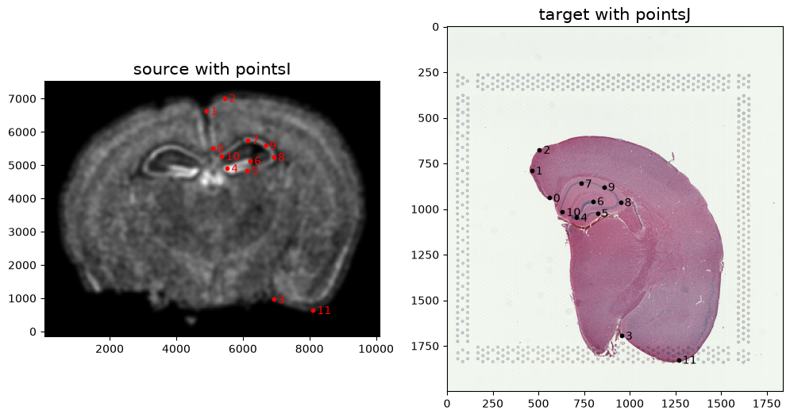
From the landmark points, we can generate a linear transformation L and translation T which will produce a simple initial affine transformation A.
[12]:
# compute initial affine transformation from points
L,T = STalign.L_T_from_points(pointsI,pointsJ)
A = STalign.to_A(torch.tensor(L),torch.tensor(T))
We can show the results of the simple affine transformation.
[13]:
# compute initial affine transformation from points
AI= STalign.transform_image_source_with_A(A, [YI,XI], I, [YJ,XJ])
# get extent of images
extentI = STalign.extent_from_x((YI,XI))
extentJ = STalign.extent_from_x((YJ,XJ))
fig,ax = plt.subplots(1,2)
#ax[0].imshow(AI[0], extent=extentI)
ax[0].imshow((AI.permute(1,2,0).squeeze()), extent=extentI)
ax[1].imshow((J.transpose(1,2,0).squeeze()), extent=extentJ)
ax[0].set_title('source with affine transformation', fontsize=15)
ax[1].set_title('target', fontsize=15)
[13]:
Text(0.5, 1.0, 'target')
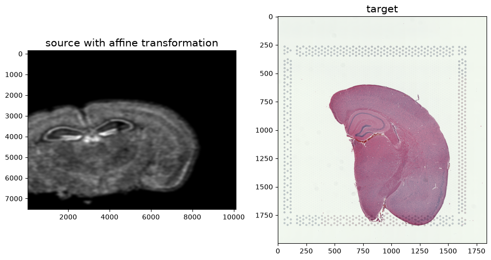
In this case, we can observe that a simple affine alignment is not sufficient to align the single-cell spatial transcriptomics dataset to the H&E staining image. So we will need to perform non-linear local alignments via LDDMM.
There are many parameters that can be tuned for performing this alignment.
We will first select the parameters related to the Gaussian mixture model for classifying pixels as to be matched, in the background, or an artifact.
Standard deviation of image matching term for Gaussian mixture modeling in cost function. This term generally controls matching accuracy with smaller corresponding to more accurate. As an common example (rule of thumb), you could chose this parameter to be the variance of the pixels in your target image
[14]:
fig,ax = plt.subplots()
ax.hist(I.ravel())
plt.xlabel('Intensity')
plt.ylabel('Number of Pixels')
plt.title('Intensity Histogram of Source Image')
[14]:
Text(0.5, 1.0, 'Intensity Histogram of Source Image')
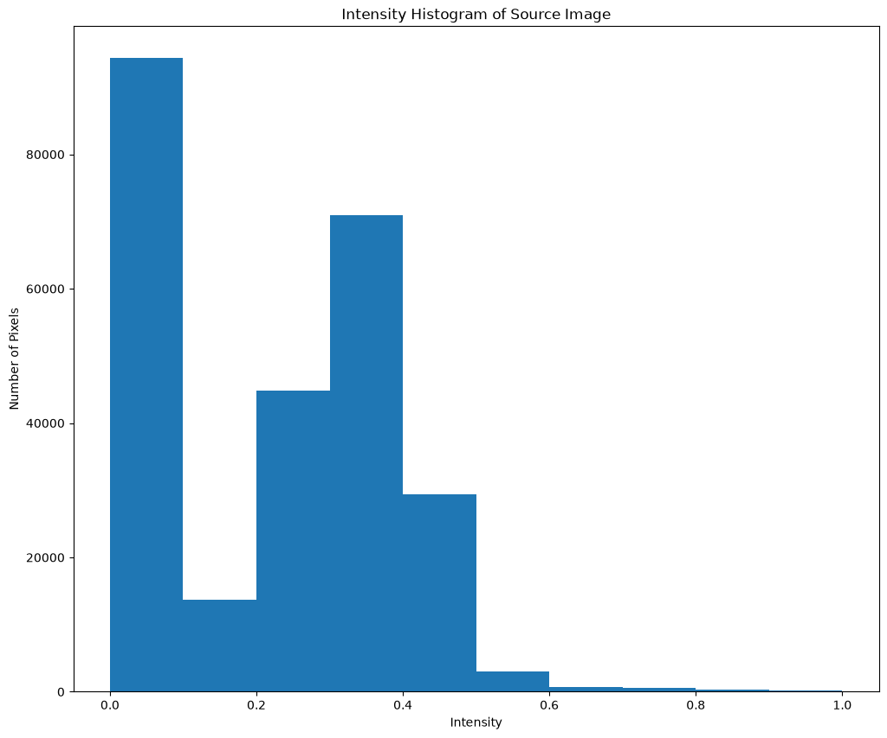
[15]:
WM = torch.ones(I[0].shape)*0.5
WB = torch.ones(I[0].shape)*0.4
WA = torch.ones(I[0].shape)*0.1
muA = torch.sum(WA*torch.as_tensor(I),dim=(-1,-2))/torch.sum(WA)
muB = torch.sum(WB*torch.as_tensor(I),dim=(-1,-2))/torch.sum(WB)
[16]:
print(muA)
print(muB)
tensor([0.2119, 0.2119, 0.2119], dtype=torch.float64)
tensor([0.2119, 0.2119, 0.2119], dtype=torch.float64)
[17]:
#muB = np.mean(I)
#muB = 0
#print(np.var(I[I>muB]))
#print(np.std(I[I>muB]))
#print(len(I[I>muB]))
#print(len(I[I<=muB]))
#print("Set sigmaM to be {:.2f}". format(np.std(I[I>muB])))
#print("Set sigmaB to be {:.2f}". format(np.std(I[I<=muB])))
#print(np.var(I[I<=muB]))
#print(np.std(I[I<=muB]))
#print("Set sigmaM to be the variance, {:.2f}". format(np.var(I)))
print("Set sigmaM, sigmaB, and sigmaA to be the standard deviation, {:.2f}". format(np.std(I)))
Set sigmaM, sigmaB, and sigmaA to be the standard deviation, 0.18
[18]:
fig,ax = plt.subplots()
ax.hist(J.ravel())
plt.xlabel('Intensity')
plt.ylabel('Number of Pixels')
plt.title('Intensity Histogram of Target Image')
[18]:
Text(0.5, 1.0, 'Intensity Histogram of Target Image')
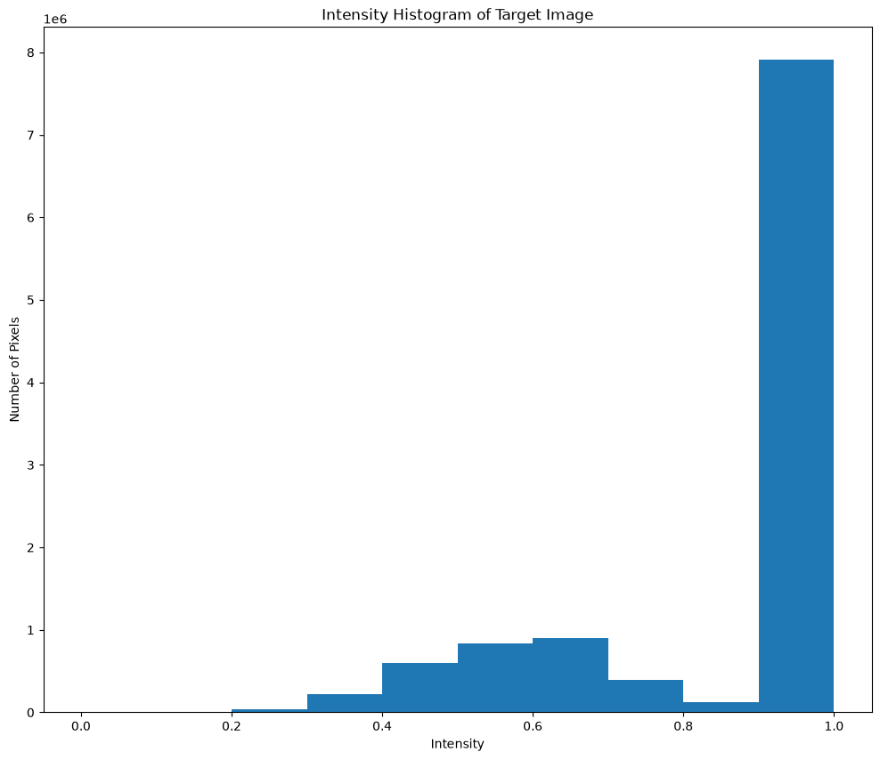
[19]:
print("Set sigmaM, sigmaB, and sigmaA to be the standard deviation, {:.2f}". format(np.std(J)))
Set sigmaM, sigmaB, and sigmaA to be the standard deviation, 0.18
[20]:
WM = torch.ones(J[0].shape)*0.5
WB = torch.ones(J[0].shape)*0.4
WA = torch.ones(J[0].shape)*0.1
muA = torch.sum(WA*torch.as_tensor(J),dim=(-1,-2))/torch.sum(WA)
muB = torch.sum(WB*torch.as_tensor(J),dim=(-1,-2))/torch.sum(WB)
[21]:
print(muA)
print(muB)
tensor([0.8627, 0.8281, 0.8340])
tensor([0.8627, 0.8281, 0.8340])
[22]:
WM = torch.ones(I[0].shape)*0.5
WB = torch.ones(I[0].shape)*0.4
WA = torch.ones(I[0].shape)*0.1
muA = torch.sum(WA*torch.as_tensor(I),dim=(-1,-2))/torch.sum(WA)
muB = torch.sum(WB*torch.as_tensor(I),dim=(-1,-2))/torch.sum(WB)
[23]:
print(muA)
print(muB)
tensor([0.2119, 0.2119, 0.2119], dtype=torch.float64)
tensor([0.2119, 0.2119, 0.2119], dtype=torch.float64)
[24]:
%%time
# run LDDMM
# specify device (default device for STalign.LDDMM is cpu)
if torch.cuda.is_available():
device = 'cuda:0'
else:
device = 'cpu'
# keep all other parameters default
params = {'L':L,'T':T,
'niter': 200,
'pointsI': pointsI,
'pointsJ': pointsJ,
'device': device,
'sigmaP': 2e-1,
'sigmaM': 0.2,
'sigmaB': 0.19,
'sigmaA': 0.3,
'diffeo_start' : 100,
'epL': 5e-11,
'epT': 5e-4,
'epV': 5e1
}
# keep all other parameters default
# params = {'L':L,'T':T,
# 'niter': 200,
# 'pointsI': pointsI,
# 'pointsJ': pointsJ,
# 'device': device,
# 'sigmaP': 2e-1,
# 'sigmaM': 0.18,
# 'sigmaB': 0.18,
# 'sigmaA': 0.18,
# 'diffeo_start' : 100,
# 'epL': 5e-11,
# 'epT': 5e-4,
# 'epV': 5e1
# }
out = STalign.LDDMM([YI,XI],I,[YJ,XJ],J,**params)
CPU times: user 1min 8s, sys: 661 ms, total: 1min 8s
Wall time: 5.56 s
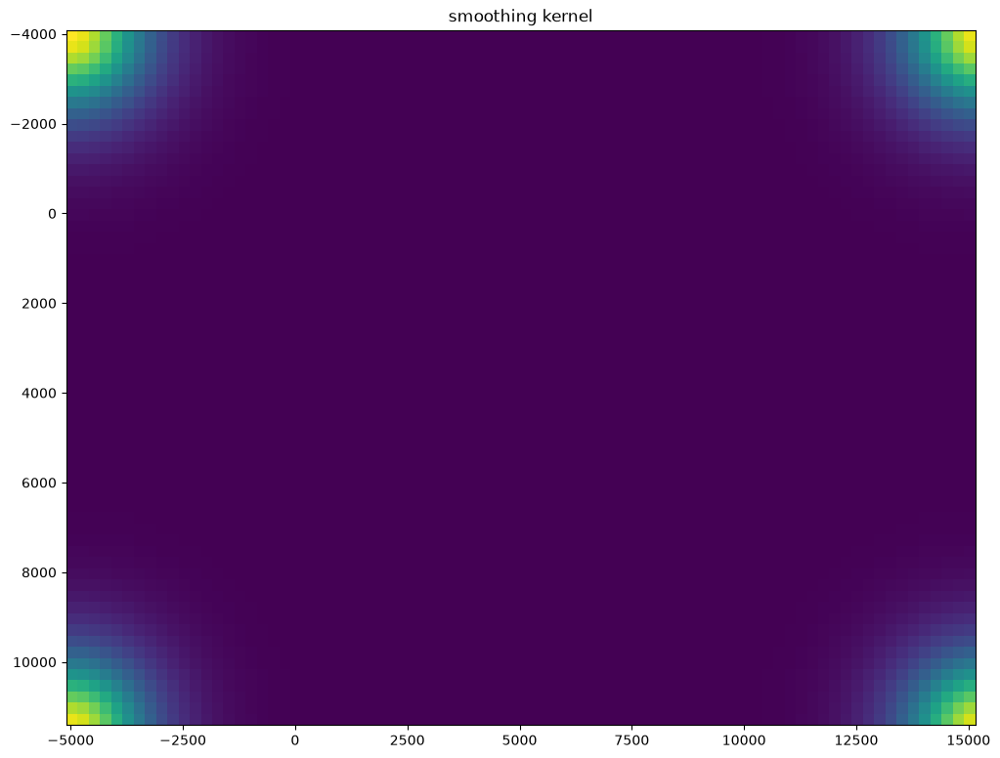
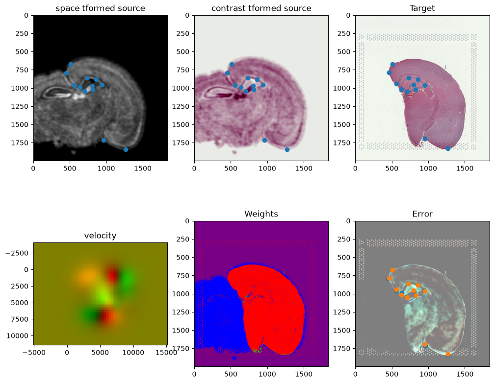
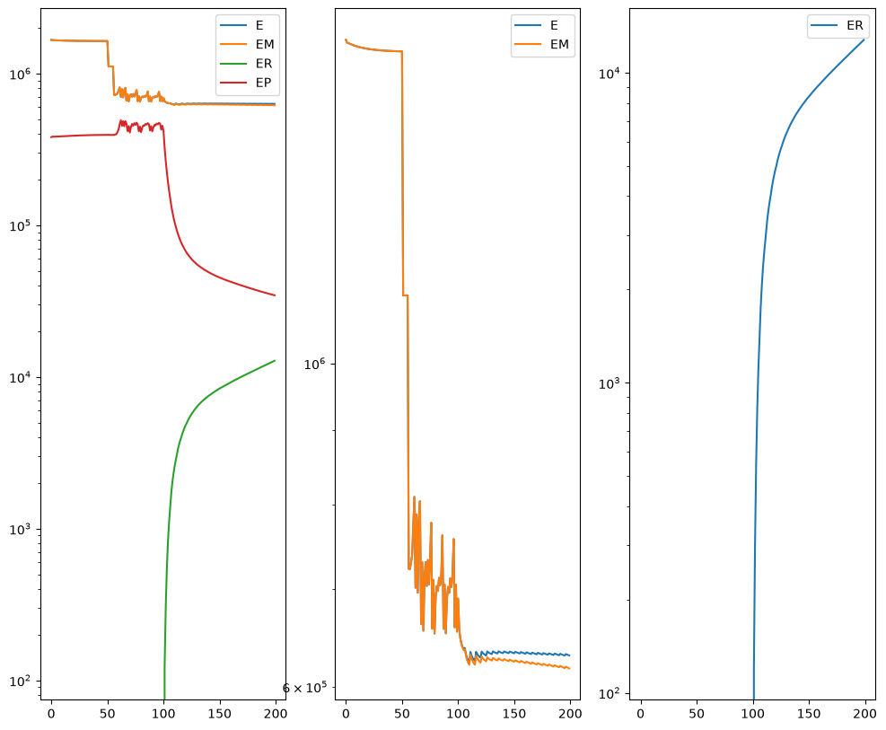
[25]:
# get necessary output variables
A = out['A']
v = out['v']
xv = out['xv']
Plots generated throughout the alignment can be used to give you a sense of whether the parameter choices are appropriate and whether your alignment is converging on a solution.
We can also evaluate the resulting alignment by applying the transformation to visualize how our source and target images were deformed to achieve the alignment.
[26]:
# apply transform
phii = STalign.build_transform(xv,v,A,XJ=[YJ,XJ],direction='b')
phiI = STalign.transform_image_source_to_target(xv,v,A,[YI,XI],I,[YJ,XJ])
phiipointsI = STalign.transform_points_source_to_target(xv,v,A,pointsI)
# plot with grids
fig,ax = plt.subplots()
levels = np.arange(-100000,100000,1000)
ax.contour(XJ,YJ,phii[...,0],colors='r',linestyles='-',levels=levels)
ax.contour(XJ,YJ,phii[...,1],colors='g',linestyles='-',levels=levels)
ax.set_aspect('equal')
ax.set_title('source to target')
ax.imshow(phiI.permute(1,2,0)/torch.max(phiI),extent=extentJ)
ax.scatter(phiipointsI[:,1].detach(),phiipointsI[:,0].detach(),c="m")
[26]:
<matplotlib.collections.PathCollection at 0x13edcb5f0>
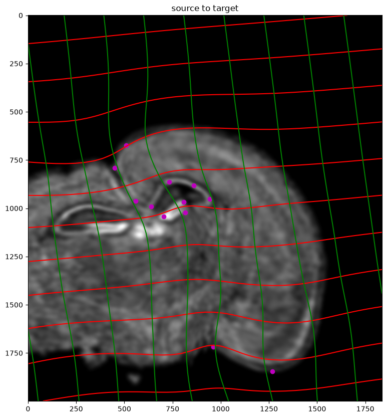
Finally, we can apply our transform to the original sets of single cell centroid positions to achieve their new aligned positions.
[27]:
# apply transform to original points
tpointsI= STalign.transform_points_source_to_target(xv,v,A, np.stack([yI, xI], 1))
#switch from row column coordinates (y,x) to (x,y)
xI_LDDMM = tpointsI[:,1]
yI_LDDMM = tpointsI[:,0]
And we can visualize the results.
[28]:
# plot
#fig,ax = plt.subplots()
#ax.imshow((I).transpose(1,2,0),extent=extentI)
#ax.scatter(phiipointsJ[:,1].detach(),phiipointsJ[:,0].detach(),c="r")
#ax.scatter(tpointsI[:,1].detach(),tpointsI[:,0].detach(),s=1,alpha=0.1)
# plot results
fig,ax = plt.subplots()
#ax.scatter(xI,yI,s=1,alpha=0.1, label='source')
ax.scatter(xI_LDDMM,yI_LDDMM,s=1,alpha=0.1, label = 'source aligned')
ax.scatter(phiipointsI[:,1].detach(),phiipointsI[:,0].detach(),c="m", label='source landmarks aligned')
ax.scatter(pointsJ[:,1],pointsJ[:,0], c='red', label='target landmarks')
ax.imshow((J).transpose(1,2,0),extent=extentJ)
lgnd = plt.legend(loc="upper right", scatterpoints=1, fontsize=10)
for handle in lgnd.legend_handles:
handle.set_sizes([10.0])
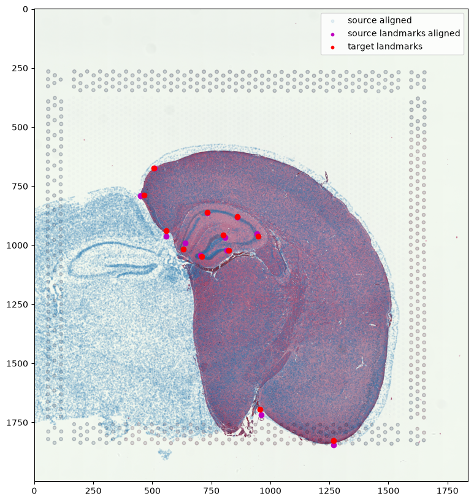
And save the new aligned positions by appending to our original data
[29]:
df3 = pd.DataFrame(
{
"aligned_x": xI_LDDMM,
"aligned_y": yI_LDDMM,
},
)
results = pd.concat([df1, df3], axis=1)
results.head()
[29]:
| Unnamed: 0 | fov | volume | center_x | center_y | min_x | max_x | min_y | max_y | aligned_x | aligned_y | |
|---|---|---|---|---|---|---|---|---|---|---|---|
| 0 | 158338042824236264719696604356349910479 | 33 | 532.778772 | 617.916619 | 2666.520010 | 614.725219 | 621.108019 | 2657.545209 | 2675.494810 | -301.930402 | 1549.494805 |
| 1 | 260594727341160372355976405428092853003 | 33 | 1004.430016 | 596.808018 | 2763.450012 | 589.669218 | 603.946818 | 2757.013212 | 2769.886812 | -308.751747 | 1532.451321 |
| 2 | 307643940700812339199503248604719950662 | 33 | 1267.183208 | 578.880018 | 2748.978012 | 570.877217 | 586.882818 | 2740.489211 | 2757.466812 | -312.007881 | 1535.526344 |
| 3 | 30863303465976316429997331474071348973 | 33 | 1403.401822 | 572.616017 | 2766.690012 | 564.937217 | 580.294818 | 2756.581212 | 2776.798812 | -313.739494 | 1532.466541 |
| 4 | 313162718584097621688679244357302162401 | 33 | 507.949497 | 608.364018 | 2687.418010 | 603.061218 | 613.666818 | 2682.493210 | 2692.342810 | -304.416156 | 1545.950150 |
We will finally create a compressed .csv.gz file named mouse_brain_map_BrainReceptorShowcase_Slice2_Replicate3_STalign_to_Slice2_Replicate2.csv.gz
[30]:
results.to_csv('../merfish_data/mouse_brain_map_BrainReceptorShowcase_Slice2_Replicate3_STalign_to_Visium_tissue_hires_image.csv.gz',
compression='gzip')